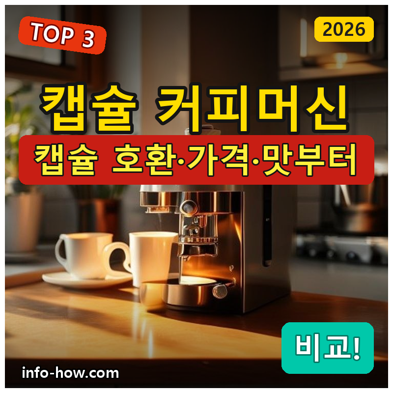
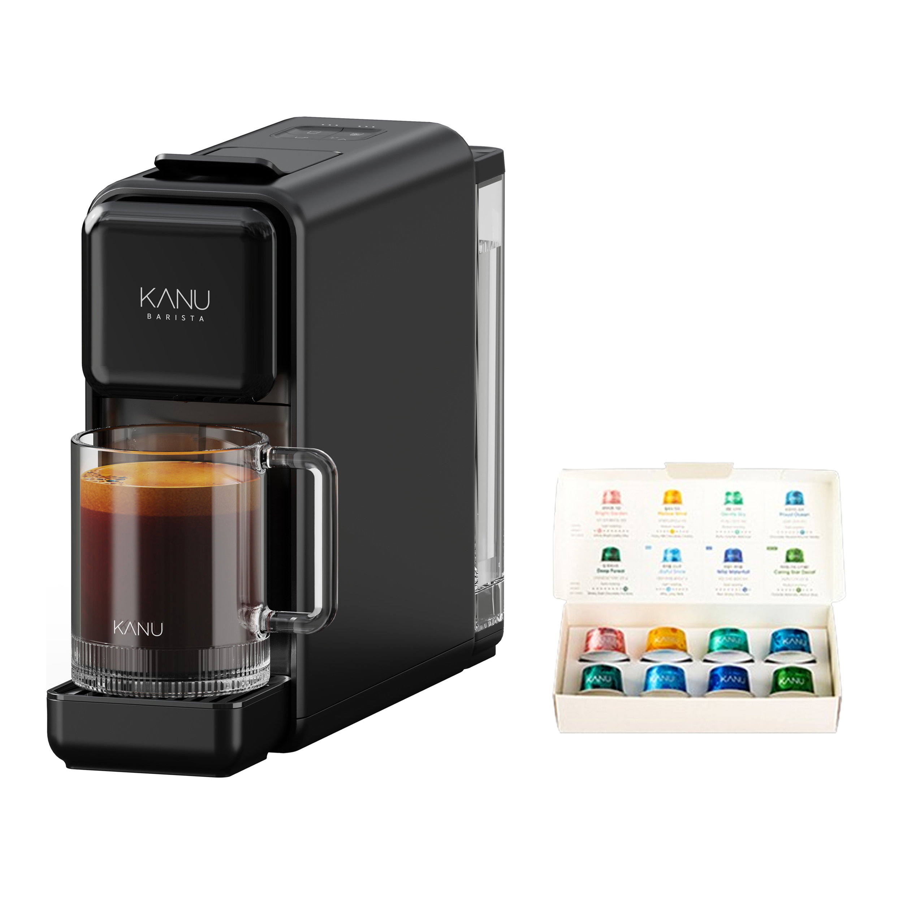
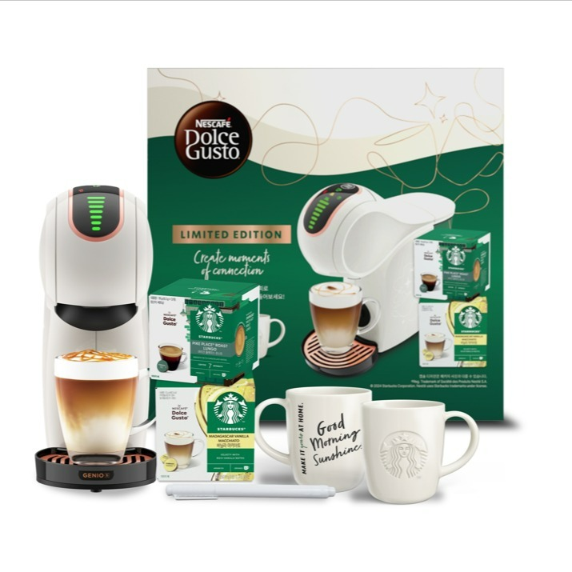

캡슐 커피머신, 가성비냐 네스프레소냐
작성: 생활서식 모음 · 2026-08-22

파트너스 활동의 일환으로 일정액의 수수료를 지급받습니다
🛒 오늘의 쿠팡 특가 보러가기 →
캡슐 커피머신, 집에서 카페 커피 내려 마시려는데 뭘 살까요?
캡슐 종류가 브랜드마다 다르고,
가격 차이가 크고,
맛·관리도 신경 쓰이죠.
핵심은 "캡슐 호환(어떤 캡슐을 쓸지)과 가격, 맛"입니다.
실제 쿠팡 판매 상품 중에서
카누 가성비·돌체구스토·네스프레소 3대를
캡슐·가격·맛 기준으로 끊어드릴게요.
"저렴한 입문 카누" "다양한 돌체구스토" "크레마 네스프레소"
취향별 정답까지 담았으니
캡슐 선택 실패 없이 고르세요!
캡슐 커피머신, 가성비냐 네스프레소냐 — 결론 먼저
캡슐 커피머신은 "어떤 캡슐 생태계를 쓰느냐"로 갈려요.
가볍게 입문이면 카누 페블, 라떼·다양한 음료면 돌체구스토, 진한 에스프레소·크레마면 네스프레소가 무난합니다.
1가성비·입문 (가성비 초이스)
가성비

입문 가성비
1. 카누 바리스타 페블 캡슐커피머신 (+웰컴 키트)
돌체구스토·네스프레소는 아니어도
"저렴한 입문 홈카페"엔 딱
추천 대상
- 캡슐 커피를 저렴하게 시작하려는 분
- 카누 캡슐로 간편하게 즐기려는 분
- 웰컴 키트로 바로 써보고 싶은 분
장점
- 7만원대로 부담 없이 캡슐 홈카페 입문
- 카누 캡슐이라 구하기 쉽고 익숙한 맛
- 웰컴 키트가 포함돼 사자마자 바로 사용
단점
- 다양한 음료·크레마·확장성은 상위 제품이 낫다
이 제품은 가성비·입문용입니다. 라떼·다양한 음료면 2번 돌체구스토, 진한 크레마면 3번 네스프레소로 가세요. "입문"이면 가성비 좋아요.
한줄 리뷰
"캡슐 커피를 저렴하게 시작"이면 카누 페블이 무난합니다. 간편해요. 다양한 음료·크레마면 2·3번을 보세요.
주요 스펙
- 제품: 카누 바리스타 페블 캡슐커피머신
- 캡슐: 카누 전용
- 구성: 웰컴 키트 포함
- 배송: 로켓배송
- 가격: 약 70,570원 (변동 가능)
- ※ 실제 스펙·가격과 차이가 있을 수 있습니다
2다양·라떼 (베스트 초이스)
베스트

다양한 음료
2. 돌체구스토 지니오S (스타벅스 앳홈 호환)
라떼·아메리카노 등 다양한 음료를
캡슐 하나로 즐기는 실속
추천 대상
- 라떼·카푸치노 등 다양한 음료를 즐기려는 분
- 스타벅스 앳홈 캡슐을 쓰려는 분
- 가족이 각자 다른 음료를 마시는 경우
장점
- 돌체구스토라 라떼·음료 캡슐이 다양함
- 스타벅스 앳홈 등 호환 캡슐 선택폭이 넓음
- 자동 물량 조절 등 편의 기능
단점
- 진한 에스프레소·크레마는 네스프레소(3번)가 낫다
저렴한 입문이면 1번, 진한 크레마면 3번 네스프레소입니다. 2번은 "다양한 음료+호환 캡슐"의 실속 구간 — 라떼·가족용에 무난합니다.
한줄 리뷰
"라떼·다양한 음료를 캡슐로 즐기고 싶다"면 돌체구스토가 좋습니다. 선택폭이 넓어요. 진한 에스프레소면 3번을 보세요.
주요 스펙
- 제품: 돌체구스토 지니오S
- 캡슐: 돌체구스토(스타벅스 앳홈 등)
- 특징: 다양한 음료
- 배송: 로켓배송
- 가격: 약 129,000원 (변동 가능)
- ※ 실제 스펙·가격과 차이가 있을 수 있습니다
3크레마·정통 (프리미엄)
풍부한 크레마와 정통 에스프레소로
제대로 즐기는 네스프레소
추천 대상
- 진한 에스프레소·크레마를 원하는 분
- 네스프레소 캡슐 생태계를 쓰려는 분
- 홈카페 퀄리티를 제대로 높이려는 분
장점
- 버츄오라 풍부한 크레마의 정통 커피
- 네스프레소 캡슐이라 맛·품질이 안정적
- 다양한 용량(에스프레소~머그)을 지원
단점
저렴한 입문이면 1번, 라떼·다양함이면 2번 돌체구스토가 합리적입니다. 3번은 크레마+정통 에스프레소를 원하는 분에게 값어치가 있습니다.
한줄 리뷰
"진한 크레마와 정통 에스프레소로 제대로"면 네스프레소가 좋습니다. 퀄리티가 좋아요. 저렴·다양함이면 1·2번이 합리적입니다.
주요 스펙
- 제품: 네스프레소 버츄오 업
- 캡슐: 네스프레소 버츄오
- 특징: 크레마·다양한 용량
- 배송: 로켓배송
- 가격: 약 227,680원 (변동 가능)
- ※ 실제 스펙·가격과 차이가 있을 수 있습니다
스펙 비교표: 한눈에 보기
가격·풍량·무게 중 본인에게 중요한 기준부터 보세요. "최고" 표시는 3제품 중 객관적 1위 값입니다.
← 좌우로 스크롤 →
캡슐 커피머신 고를 때 봐야 할 3가지
캡슐 생태계만 정하면 후회가 적습니다.
1) 캡슐 호환 — 생태계
- 기기마다 전용 캡슐이 달라 구매처·가격이 갈립니다.
- 네스프레소·돌체구스토·카누 등 캡슐 구하기 쉬운지 확인.
- 호환 캡슐(타사) 선택폭도 참고하세요.
2) 음료 종류 — 취향
- 에스프레소·아메리카노 위주면 네스프레소·카누
- 라떼·카푸치노 등 다양하게면 돌체구스토
- 우유 거품(스팀) 필요 여부도 확인
3) 관리·편의 — 사용감
- 물통 용량·캡슐 자동 배출 등 편의 기능
- 세척·물때 관리가 쉬운지
- 크기·전력도 주방 환경에 맞게
입문이냐 정통이냐, 뭘 사야 할까?
캡슐과 음료 취향만 정하면 답이 나옵니다.
- 가성비·입문: 1번 카누 페블 → 저렴하게
- 다양·라떼: 2번 돌체구스토 → 여러 음료
- 크레마·정통: 3번 네스프레소 → 제대로
자주 묻는 질문 (FAQ)
Q1. 캡슐 커피머신은 캡슐값이 많이 드나요?
캡슐당 몇백 원대로, 원두를 직접 내리는 것보다는 비싸지만 카페보다는 훨씬 저렴합니다. 브랜드·캡슐 종류에 따라 단가가 다르고, 호환 캡슐(타사 제조)을 쓰면 더 아낄 수 있습니다. 자주 마신다면 캡슐 단가와 구매 편의를 함께 고려해 기기를 고르는 것이 좋습니다.
Q2. 네스프레소랑 돌체구스토 캡슐은 호환되나요?
호환되지 않습니다. 브랜드마다 전용 캡슐 규격이 달라 서로 쓸 수 없습니다. 네스프레소는 네스프레소(또는 호환) 캡슐, 돌체구스토는 돌체구스토 캡슐만 들어갑니다. 기기를 고를 때 앞으로 쓸 캡슐 생태계를 먼저 정하는 것이 중요합니다.
Q3. 캡슐 커피머신 관리는 어렵나요?
어렵지 않습니다. 사용 후 캡슐을 버리고 물받이를 비우면 되고, 주기적으로 물때 제거(디스케일링)를 해주면 오래 씁니다. 물통을 자주 갈아주고 세척하면 위생적입니다. 제품별 관리 방법을 확인하면 관리가 수월합니다.
Q4. 우유 거품(라떼)도 되나요?
제품에 따라 다릅니다. 돌체구스토는 우유 캡슐로 라떼·카푸치노를 만들 수 있고, 네스프레소는 별도 우유 거품기(에어로치노)를 함께 쓰면 됩니다. 라떼류를 자주 마시면 우유 음료 지원 여부와 거품기 포함 여부를 확인하세요.
Q5. 캡슐 커피머신과 전자동 커피머신 중 뭐가 나은가요?
간편함이면 캡슐, 원두 풍미·경제성이면 전자동입니다. 캡슐은 버튼 하나로 일정한 맛을 간편하게 즐기지만 캡슐값이 들고, 전자동은 원두를 갈아 내려 풍미가 좋고 잔당 단가가 낮지만 기기값·관리 부담이 큽니다. 간편함·소량이면 캡슐, 많이 마시고 원두를 즐기면 전자동이 어울립니다.
결론: 한 줄 요약
- 1) 카누 페블 — 약 70,570원 / 가성비·입문. 저렴+웰컴키트.
- 2) 돌체구스토 지니오S — 약 129,000원 / 다양·라떼. 여러 음료.
- 3) 네스프레소 버츄오 — 약 227,680원 / 크레마·정통. 제대로.
이 포스팅은 쿠팡 파트너스 활동의 일환으로, 이에 따른 일정액의 수수료를 제공받습니다.